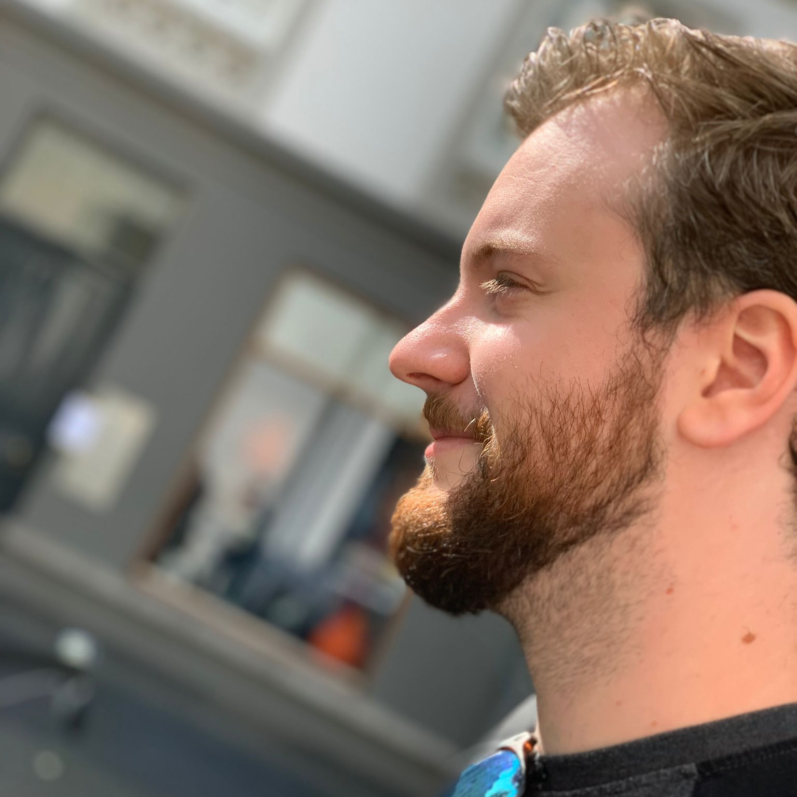

Ik ben een jonge profecional die sinds 2017 in de creative design wereld werkt. Mijn passies liggen bij mensen, technologie en verhalen. Deze passies probeer ik te vertalen in ontwerpen waarbij ik de wereld beter wil achterlaten dan hoe ik die gevonden heb.
